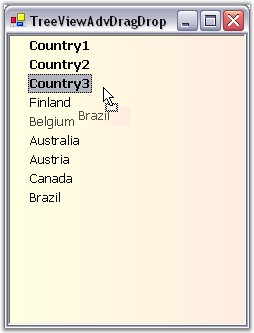

The drag and drop functionality is fully supported through the various drag drop events.
|
TreeNodeAdv Events |
Description |
|
DragDrop |
Specifies the function to be triggered after an item is dropped. |
|
DragEnter |
Specifies the function to be triggered when an item is dragged inside the control bounds. |
|
DragLeave |
Specifies the function to be triggered when an item is dragged outside the control bounds. |
|
DragOver |
Specifies the function to be triggered when an item is dragged over the control bounds. |
|
GiveFeedback |
Specifies the function to trigger when the mouse drags an item. The system request the control to provide feedback to that effect. |
|
ItemDrag |
Specifies the function to be triggered when an item is dragged. |
|
QueryContinueDrag |
Specifies the function to be triggered when an item is being dragged. |
The drag and drop functionality can be implemented by using the below code snippets.
|
[C#]
private void treeViewAdv_ItemDrag(object sender, System.Windows.Forms.ItemDragEventArgs e) { TreeViewAdv treeViewAdv = sender as TreeViewAdv;
// The TreeViewAdv always provides an array of selected nodes. TreeNodeAdv[] nodes = e.Item as TreeNodeAdv[];
// Let us get only the first selected node. TreeNodeAdv node = nodes[0];
DragDropEffects result = treeViewAdv.DoDragDrop(node, DragDropEffects.Move); }
// Helps keep track of the node that is being dragged. private TreeNodeAdv currentSourceNode; private void treeViewAdv_DragOver(object sender, System.Windows.Forms.DragEventArgs e) { // Determine drag effects bool droppable = true; TreeNodeAdv destinationNode = null; TreeViewAdv treeView = sender as TreeViewAdv; Point ptInTree = treeView.PointToClient(new Point(e.X, e.Y)); this.currentSourceNode = null;
// Looking for a single tree node. if( e.Data.GetDataPresent(typeof(TreeNodeAdv))) { // Get the destination and source node. destinationNode = treeView.GetNodeAtPoint(ptInTree); TreeNodeAdv sourceNode = (TreeNodeAdv) e.Data.GetData(typeof(TreeNodeAdv));
this.currentSourceNode = sourceNode; droppable = true; } else droppable = false;
if(droppable) // If Moving is allowed: e.Effect = DragDropEffects.Move; else e.Effect = DragDropEffects.None;
Point pt = this.treeViewAdv1.PointToClient(new Point(e.X, e.Y)); this.treeViewAdv1.SelectedNode = this.treeViewAdv1.GetNodeAtPoint(pt); Console.WriteLine(this.treeViewAdv1.SelectedNode.Text);
}
private void treeViewAdv_DragDrop(object sender, System.Windows.Forms.DragEventArgs e) { TreeViewAdv treeView = sender as TreeViewAdv;
// Get the destination and source node. TreeNodeAdv sourceNode = (TreeNodeAdv) e.Data.GetData(typeof(TreeNodeAdv));
Point pt = this.treeViewAdv1.PointToClient(new Point(e.X, e.Y)); TreeNodeAdv destinationNode = this.treeViewAdv1.GetNodeAtPoint(pt); sourceNode.Move(destinationNode, NodePositions.Next);
this.currentSourceNode = null;
treeView.SelectedNode = sourceNode; }
private void treeViewAdv_DragLeave(object sender, System.EventArgs e) { // Let the highlight tracker keep track of the current highlight node. this.treeViewDragHighlightTracker.ClearHighlightNode(); }
private void treeViewAdv_QueryContinueDrag(object sender, System.Windows.Forms.QueryContinueDragEventArgs e) { // Cancel dragging when Escape was pressed. if(e.EscapePressed) { e.Action = DragAction.Cancel; } }
private void treeViewAdv_DragEnter(object sender, System.Windows.Forms.DragEventArgs e) { // Reset the label text. DropLocationLabel.Text = "None"; }
public event GiveFeedbackEventHandler GiveFeedback; private System.Windows.Forms.CheckBox UseCustomCursorsCheck; private Cursor MyNoDropCursor; private Cursor MyNormalCursor;
private void treeViewAdv_GiveFeedback(object sender, System.Windows.Forms.GiveFeedbackEventArgs e) { // Use custom cursors if the check box is checked. if (UseCustomCursorsCheck.Checked) { MyNormalCursor = new Cursor("3dwarro.cur"); MyNoDropCursor = new Cursor("3dwno.cur"); if (MyNormalCursor != null) MyNormalCursor.Dispose(); if (MyNoDropCursor != null) MyNoDropCursor.Dispose(); // Sets the custom cursor based upon the effect. e.UseDefaultCursors = false; if ((e.Effect & DragDropEffects.Move) == DragDropEffects.Move) Cursor.Current = MyNormalCursor; else Cursor.Current = MyNoDropCursor; } } |
|
[VB.NET]
Private Sub treeViewAdv_ItemDrag(ByVal sender As Object, ByVal e As System.Windows.Forms.ItemDragEventArgs) Dim treeViewAdv As TreeViewAdv = CType(IIf(TypeOf sender Is TreeViewAdv, sender, Nothing), TreeViewAdv)
' The TreeViewAdv always provides an array of selected nodes. Dim nodes As TreeNodeAdv() = CType(IIf(TypeOf e.Item Is TreeNodeAdv, e.Item, Nothing), TreeNodeAdv)()
' Let us get only the first selected node. Dim node As TreeNodeAdv = nodes(0)
Dim result As DragDropEffects = treeViewAdv.DoDragDrop(node, DragDropEffects.Move) End Sub
' Helps keep track of the node that is being dragged. Private currentSourceNode As TreeNodeAdv Private Sub treeViewAdv_DragOver(ByVal sender As Object, ByVal e As System.Windows.Forms.DragEventArgs) ' Determine drag effects Dim droppable As Boolean = True Dim destinationNode As TreeNodeAdv = Nothing Dim treeView As TreeViewAdv = CType(IIf(TypeOf sender Is TreeViewAdv, sender, Nothing), TreeViewAdv) Dim ptInTree As Point = treeView.PointToClient(New Point(e.X, e.Y)) Me.currentSourceNode = Nothing
' Looking for a single tree node. If e.Data.GetDataPresent(GetType(TreeNodeAdv)) Then ' Get the destination and source node. destinationNode = treeView.GetNodeAtPoint(ptInTree) Dim sourceNode As TreeNodeAdv = CType(e.Data.GetData(GetType(TreeNodeAdv)), TreeNodeAdv)
Me.currentSourceNode = sourceNode droppable = True Else droppable = False End If
If droppable Then ' If Moving is allowed: e.Effect = DragDropEffects.Move Else e.Effect = DragDropEffects.None End If
Dim pt As Point = Me.treeViewAdv1.PointToClient(New Point(e.X, e.Y)) Me.treeViewAdv1.SelectedNode = Me.treeViewAdv1.GetNodeAtPoint(pt) Console.WriteLine(Me.treeViewAdv1.SelectedNode.Text)
End Sub
Private Sub treeViewAdv_DragDrop(ByVal sender As Object, ByVal e As System.Windows.Forms.DragEventArgs) Dim treeView As TreeViewAdv = CType(IIf(TypeOf sender Is TreeViewAdv, sender, Nothing), TreeViewAdv)
' Get the destination and source node. Dim sourceNode As TreeNodeAdv = CType(e.Data.GetData(GetType(TreeNodeAdv)), TreeNodeAdv)
Dim pt As Point = Me.treeViewAdv1.PointToClient(New Point(e.X, e.Y)) Dim destinationNode As TreeNodeAdv = Me.treeViewAdv1.GetNodeAtPoint(pt) sourceNode.Move(destinationNode, NodePositions.Next)
Me.currentSourceNode = Nothing
treeView.SelectedNode = sourceNode End Sub
Private Sub treeViewAdv_DragEnter(ByVal sender As Object, ByVal e As DragEventArgs) Handles ListDragTarget.DragEnter ' Reset the label text. DropLocationLabel.Text = "None" End Sub
Private Sub treeViewAdv_DragLeave(ByVal sender As Object, ByVal e As System.EventArgs) Handles treeViewAdv1.DragLeave ' Let the highlight tracker keep track of the current highlight node. Me.treeViewDragHighlightTracker.ClearHighlightNode() End Sub
Private Sub treeViewAdv_QueryContinueDrag(ByVal sender As Object, ByVal e As System.Windows.Forms.QueryContinueDragEventArgs) Handles treeViewAdv1.QueryContinueDrag ' Cancel dragging when Escape was pressed. If e.EscapePressed Then e.Action = DragAction.Cancel End If End Sub
Public Event GiveFeedback As GiveFeedbackEventHandler Friend WithEvents UseCustomCursorsCheck As System.Windows.Forms.CheckBox Private MyNoDropCursor As Cursor Private MyNormalCursor As Cursor Private Sub treeViewAdv_GiveFeedback(ByVal sender As Object, ByVal e As GiveFeedbackEventArgs) Handles ListDragSource.GiveFeedback ' Use custom cursors if the check box is checked. If (UseCustomCursorsCheck.Checked) Then MyNormalCursor = New Cursor("3dwarro.cur") MyNoDropCursor = New Cursor("3dwno.cur") ' Set the custom cursor based upon the effect. e.UseDefaultCursors = False If ((e.Effect And DragDropEffects.Move) = DragDropEffects.Move) Then Cursor.Current = MyNormalCursor Else Cursor.Current = MyNoDropCursor End If End If End Sub |
The below image indicates dragging of "Brazil" node.

Figure 1132: TreeViewAdv Drag Drop
 Note: You can also display a highlighted
line while dragging which has unique functionalities like keeping track of the
drag drop operation. Click here to know more
about this feature.
Note: You can also display a highlighted
line while dragging which has unique functionalities like keeping track of the
drag drop operation. Click here to know more
about this feature.
See Also
Selection Settings While Drag Drop, How to return the node at a specified location?, Node Selection, Highlighting Drag and Drop, Drag and Drop Events
 Selection Settings While Drag Drop
Selection Settings While Drag Drop